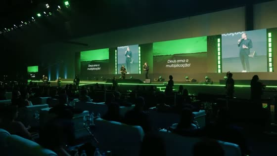
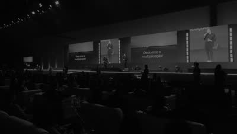
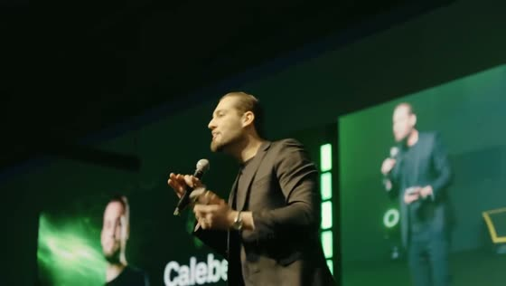
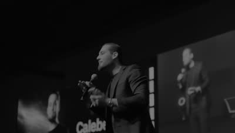
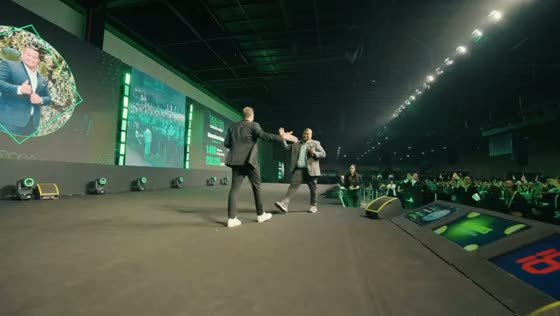
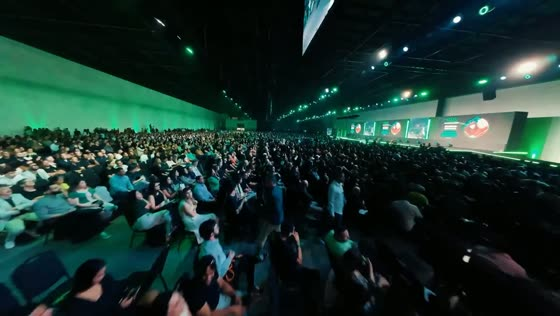
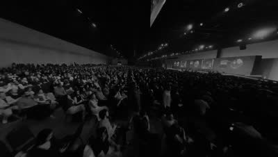
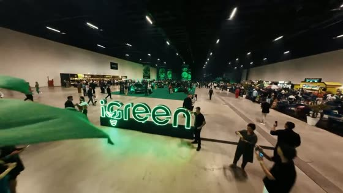
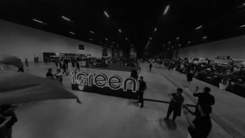
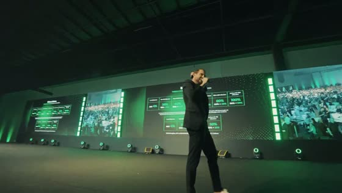
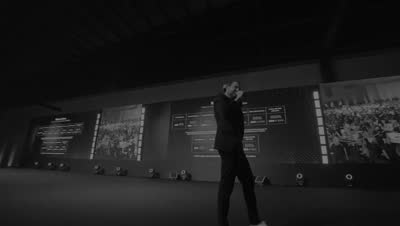
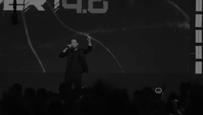
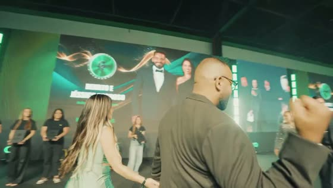
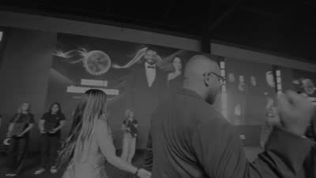
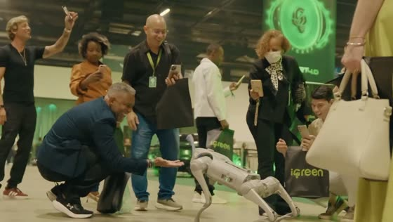
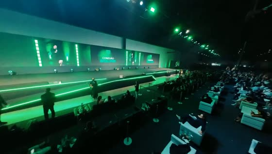
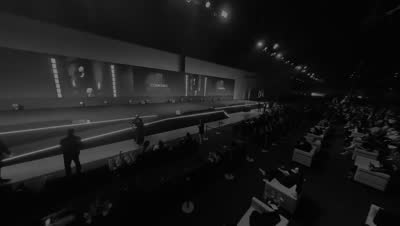
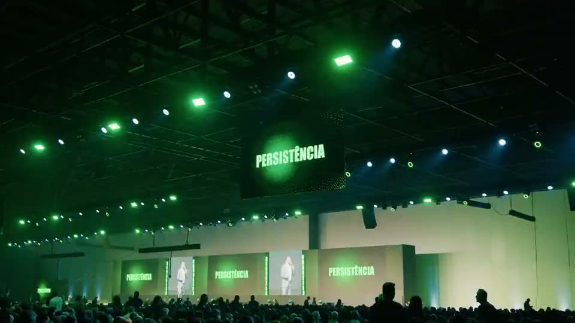
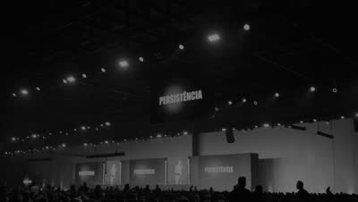
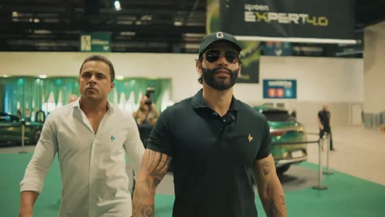

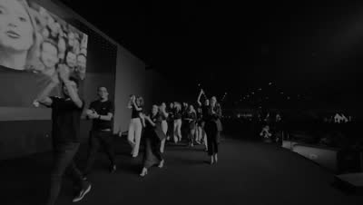

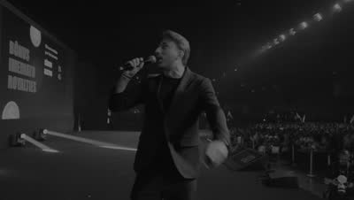
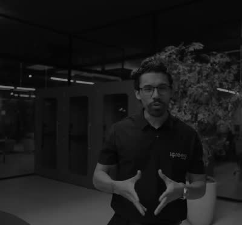

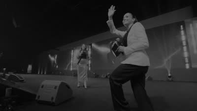
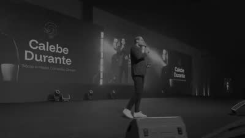
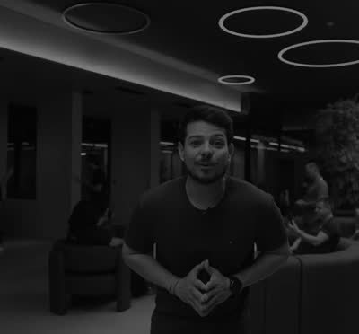
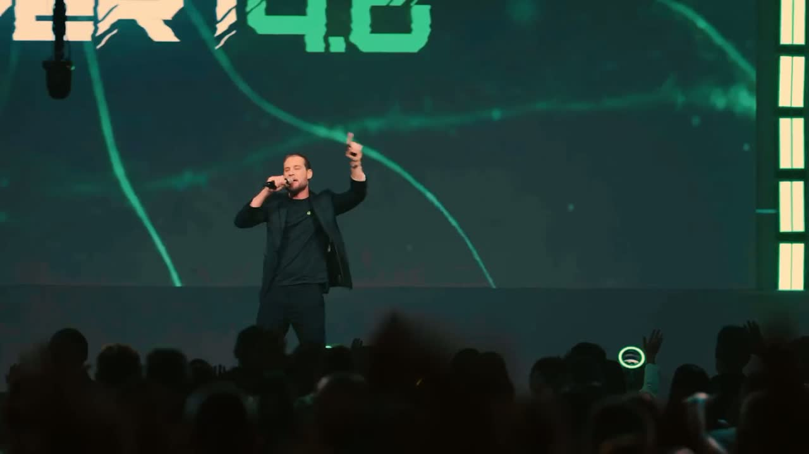
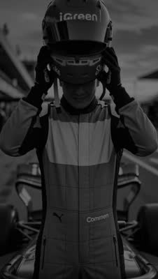
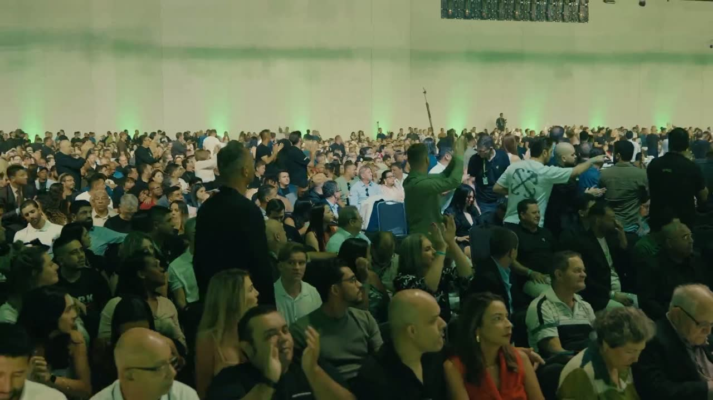
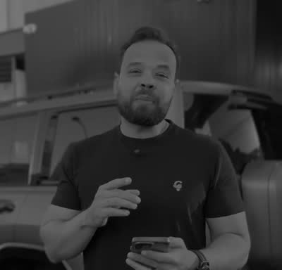
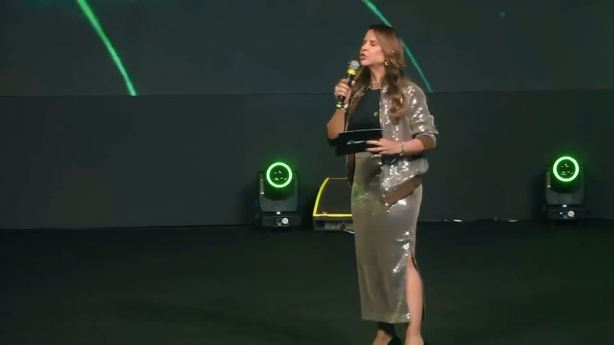
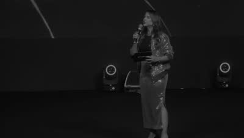

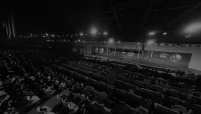
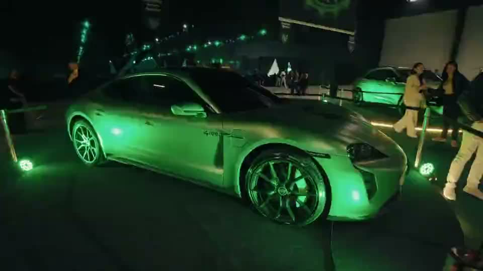
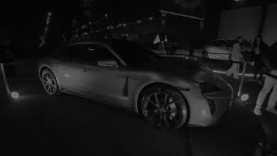

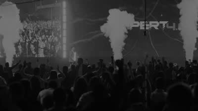
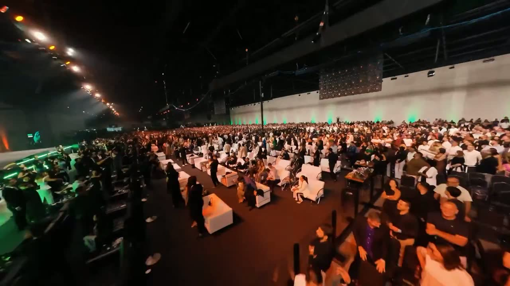
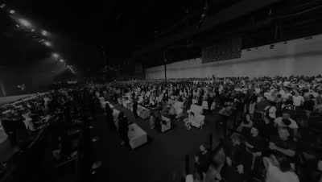

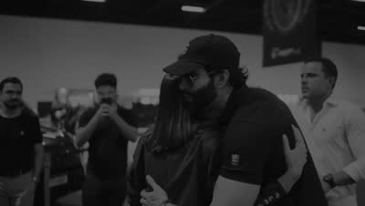
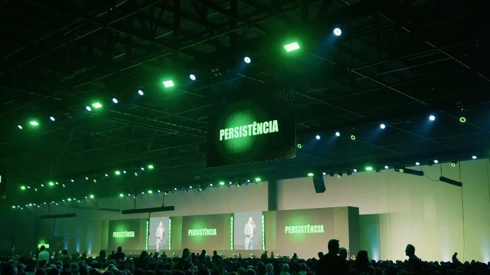
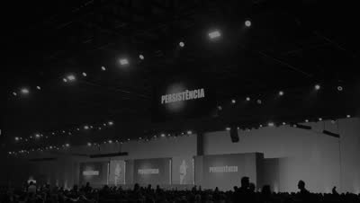
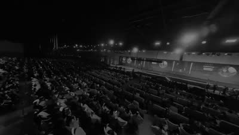

+2.000 vidas transformadas


Renda recorrente que transforma vidas de verdade
Conheça as histórias de quem virou licenciado iGreen e construiu renda com energia por assinatura, telecom e seguros, todo mês.
Próxima parada do tour: Goiânia, 16 de agostoUma vida transformadatransforma muitas outras.